A literatura não pode ser adquirida através do site.
Para mais informações, procure um grupo próximo de você ou envie e-mail para contato.joganon@gmail.com
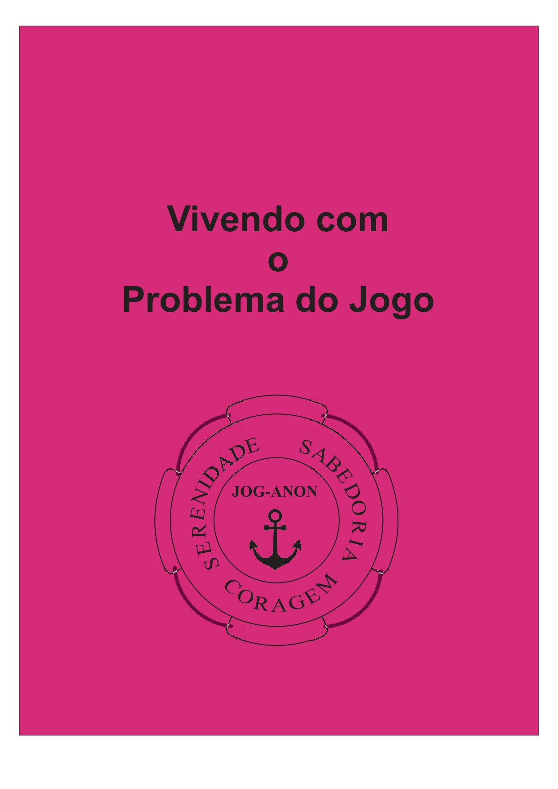
Vivendo com um jogador compulsivoOrientações para os familiares de jogadores compulsivos em forma de resposta às perguntas mais frequentes, sobre o que é o programa de Jog-Anon e o que são os doze passos de recuperação.
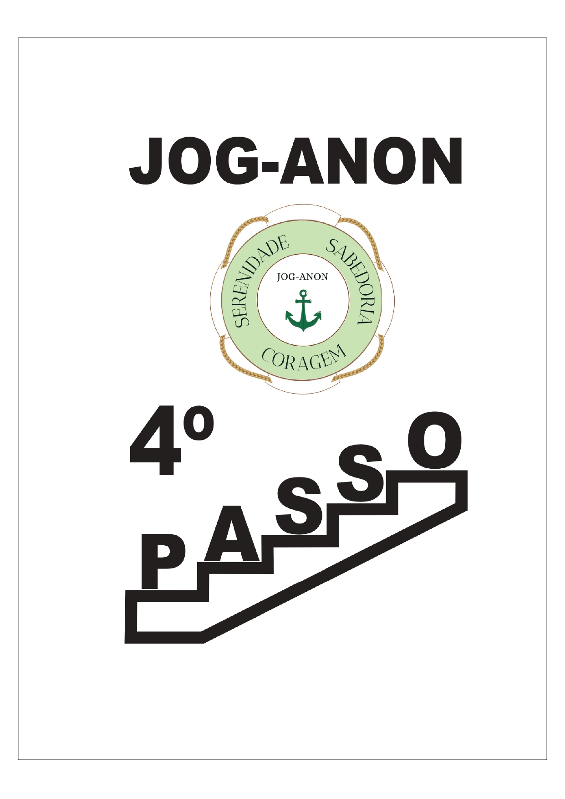
Quarto PassoOrganizado em assuntos apropriados para um inventário (raiva, honestidade, confiança, controle, auto-estima, etc.), com questões provocadoras em cada tópico para ajudar os familiares com seus inventários.
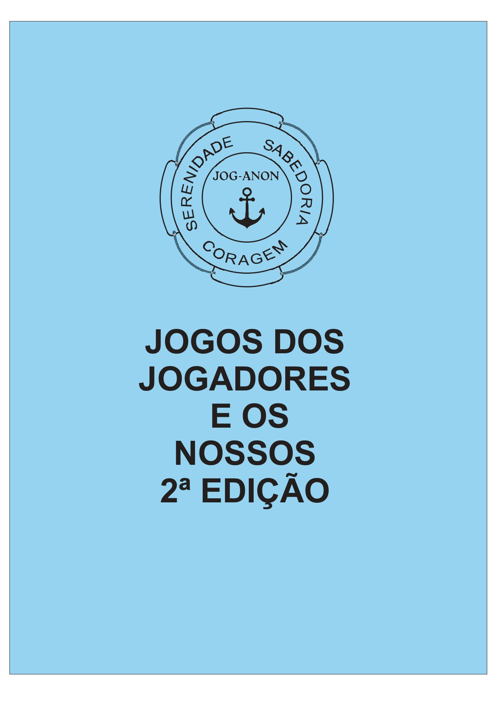
Jogos dos jogadores compulsivos e os nossosUm olhar para os "jogos mentais" emocionais jogados pelo jogador e por aqueles afetados pelo jogador compulsivo. Identifique os jogos de "procurar briga" e "instinto maternal" e outros e aprenda como evitá-los.
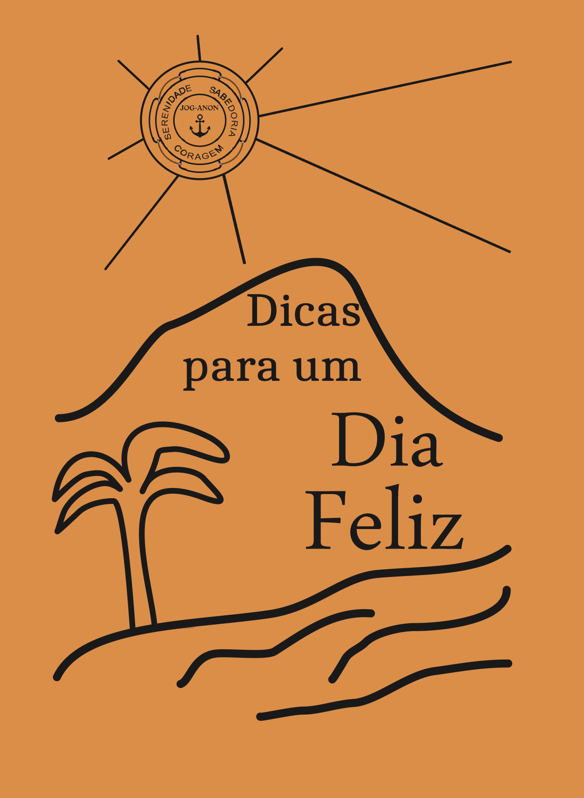
Dicas para um dia felizPensamentos sobre os doze passos de recuperação, reuniões, ferramentas do programa, espiritualidade e muitos aspectos gerais da vida.
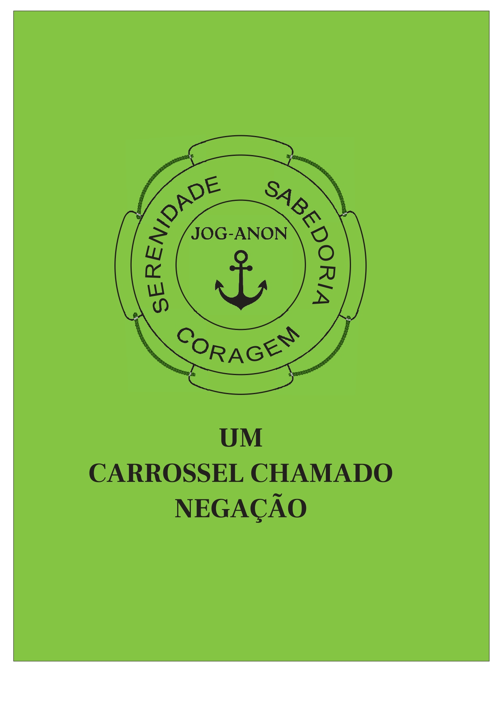
Um carrossel chamado negaçãoAtravés de uma peça imaginária, este livro mostra como aquelas primeiras pessoas na vida de um jogador podem perpetuar a doença e impedir a recuperação, e sugere o que pode ser feito para iniciar um programa positivo de recuperação.
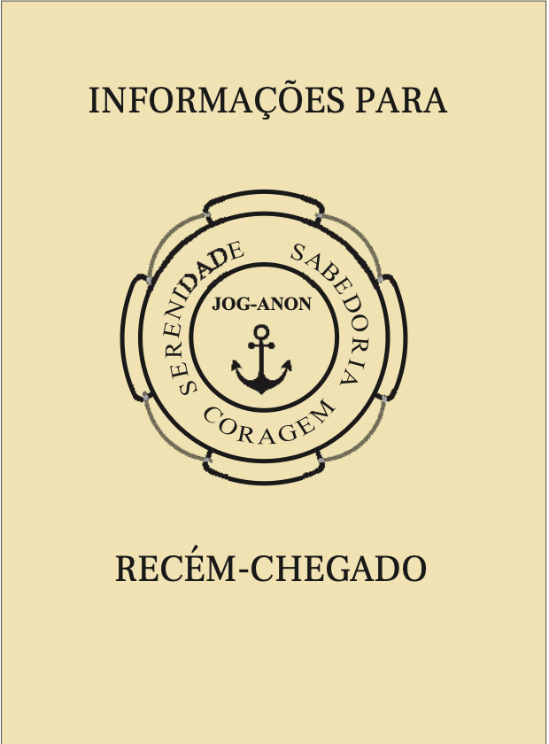
Informações para os recém-chegadosDá as boas-vindas ao recém-chegado a Jog-Anon, explica o jogo compulsivo e o programa de Jog-Anon.
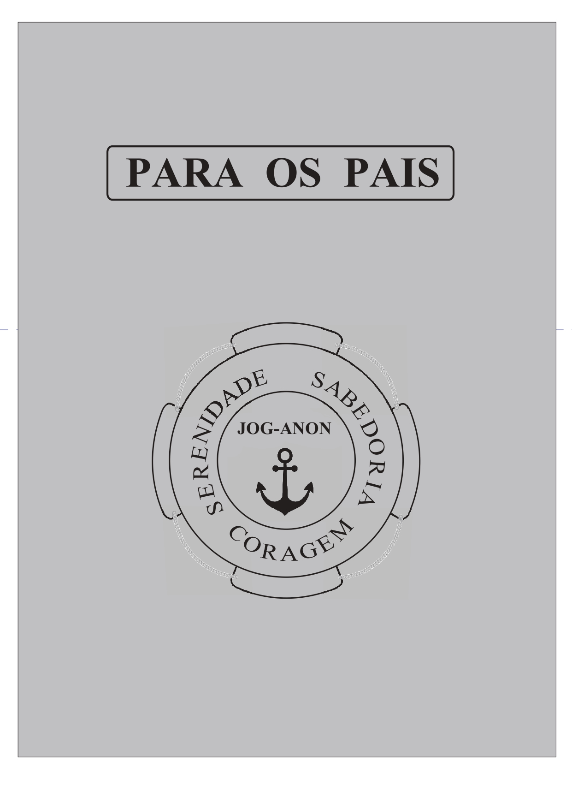
Para os paisUma compilação de textos originais de pais de jogadores compulsivos.
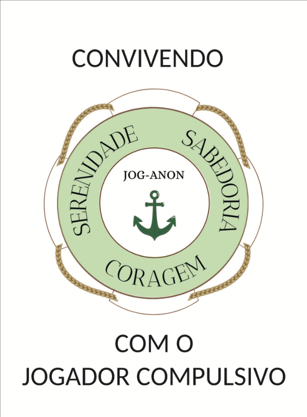
Convivendo com o jogador compulsivoTextos inspiradores de membros com seus pensamentos sobre Jog-Anon, viver com o jogador e tudo o mais que reflete em nós e na experiência de Jog-Anon em nossas vidas.
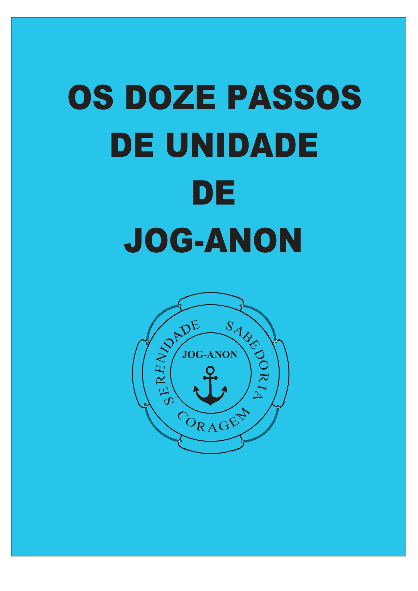
Os doze passos de unidade de Jog-AnonTraz o texto de cada um dos doze passos que mantem a unidade de Jog-Anon e que definem as bases sobre as quais está edificada a irmandade.
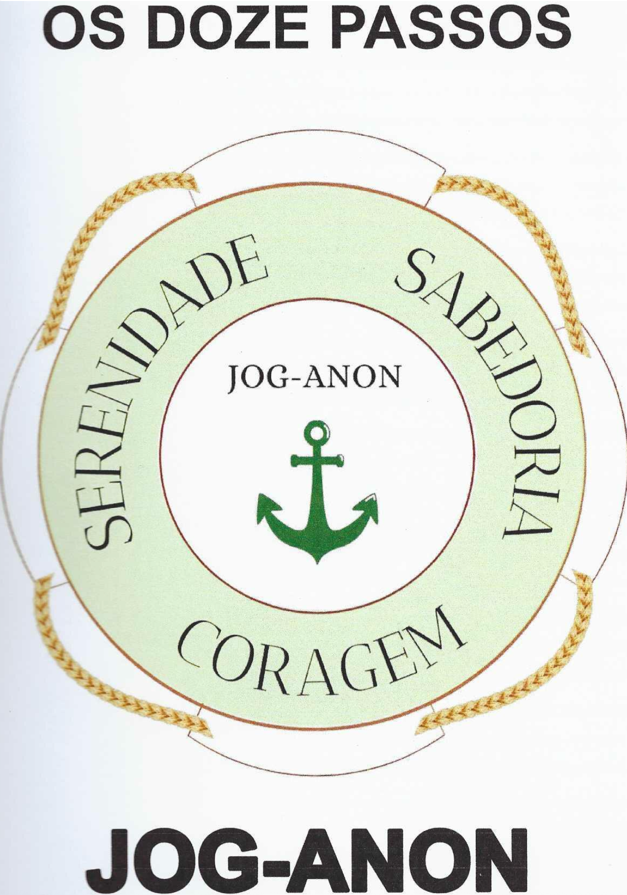
Doze passos de recuperaçãoPara estudo dos passos de recuperação nas reuniões de grupo e apoio para a recuperação de familiares que aceitam o programa.
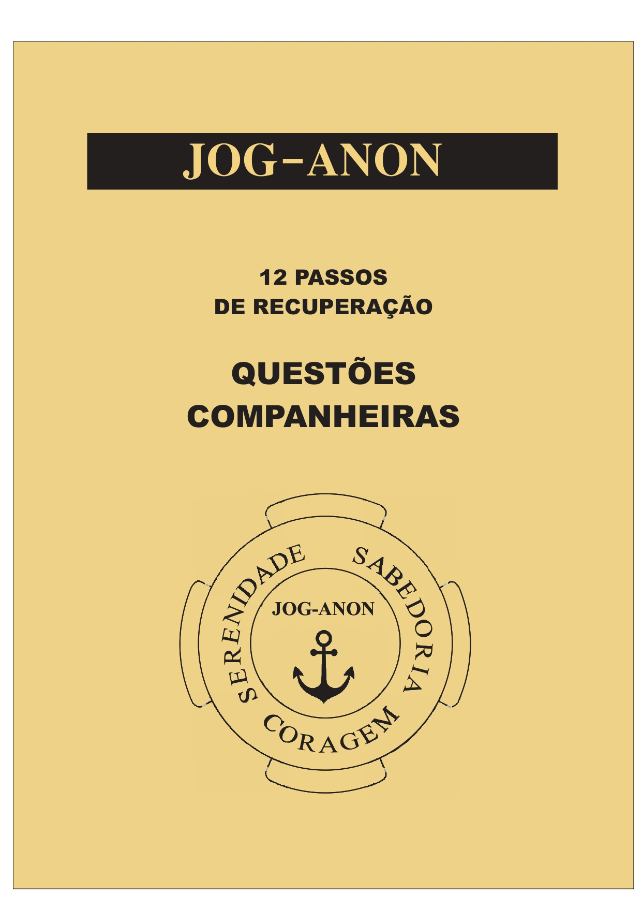
Doze passos de recuperação e questões companheirasUma explicação aprofundada dos Doze Passos de Recuperação com questões para ajudar seu estudo aprofundado.
 Jog-Anon Adolescente
Jog-Anon Adolescente
O livro básico para ser usado em reuniões de Jog-Anon Adolescente filhos de jogadores compulsivos.
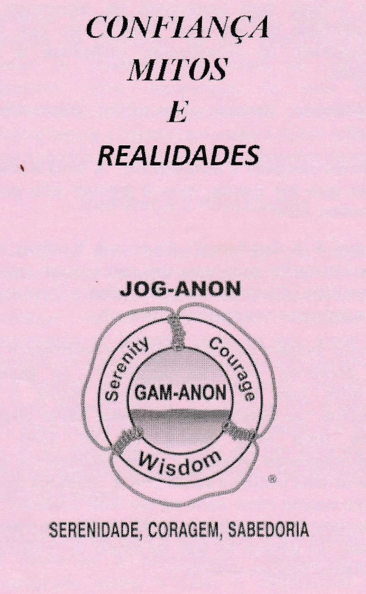
Confiança, Mitos e RealidadesIdentifica o real significado da palavra Confiança, que muitas vezes é utilizada como um dispositivo de manipulação; desfaz mitos e traz à luz a realidade, evitando que se caia em armadilhas.
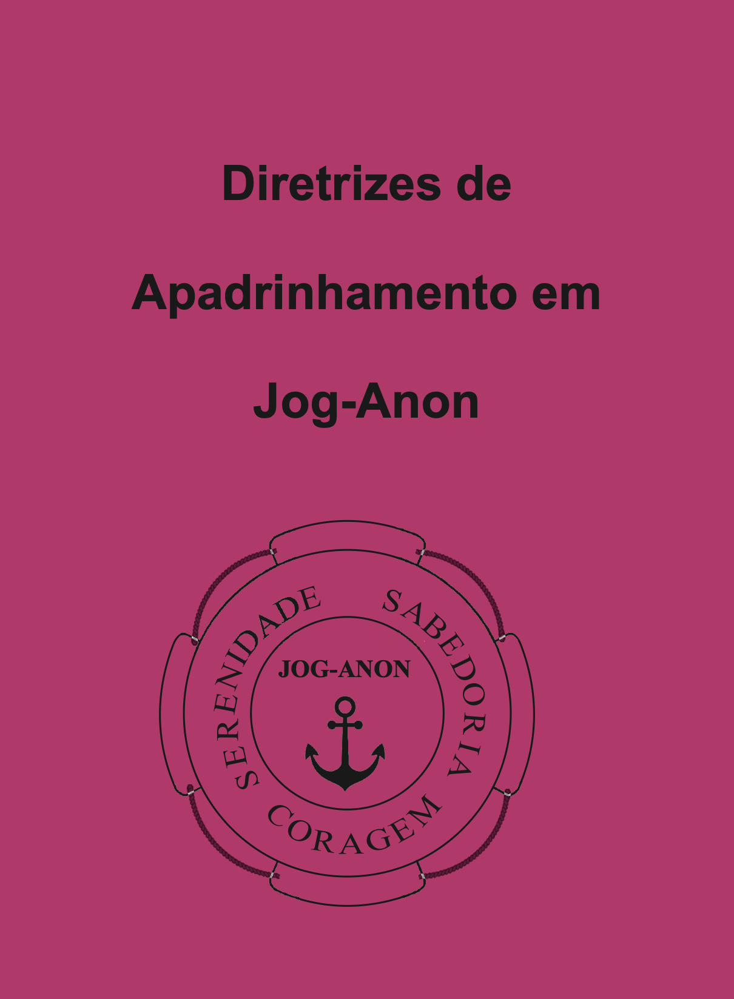
Diretrizes de Apadrinhamento em JOG-ANONTrata das questões que envolvem o relacionamento de confiança entre um irmandade, com outro, de maior experiência e vivência no Programa de Recuperação, com o qual se identifique, visando seu apoio e orientação para uma melhor compreensão do Programa de JOG-ANON e seus benefícios.
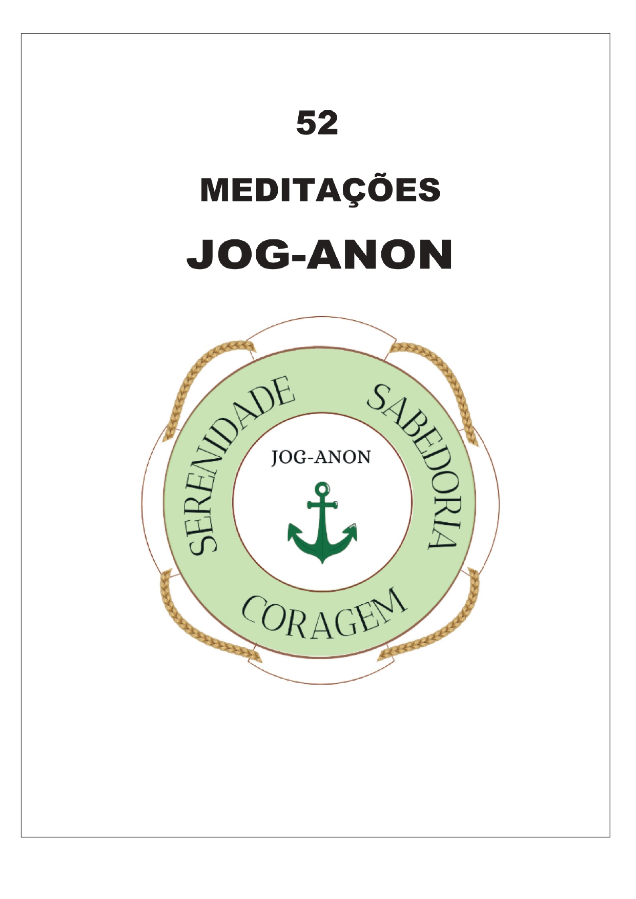
52 Meditações Jog AnonPensamento para o dia - Este livro oferece uma leitura por semana para saborear e pensar ou pode ser lido à vontade em qualquer ordem a qualquer momento. É um livro fácil de deixar por perto - uma maneira de começar o dia.
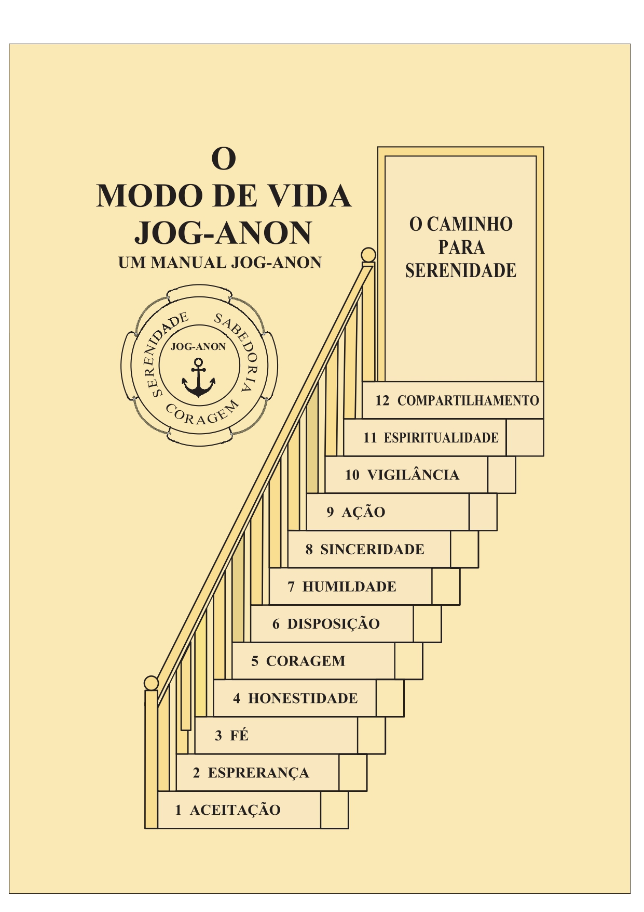
O Modo de Vida Jog AnonUm Manual Jog Anon - Este é o livro usado em todas as reuniões. Contém Boas-Vindas Sugeridas, Passos de Recuperação, Passos de Unidade, Objetivos de Jog Anon e muito mais.